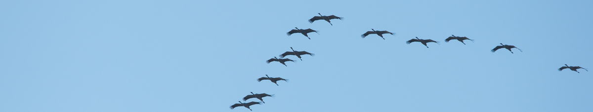
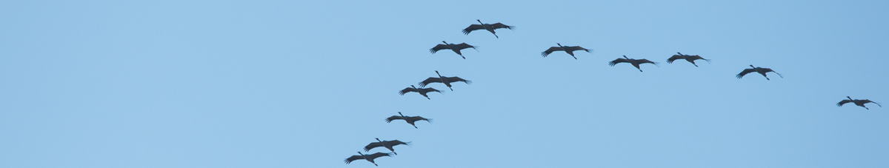


Oiseaux
| Nom | Image | Description | Son | Où le voir ? |
|---|---|---|---|---|
| Bergeronnette grise | 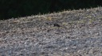 | Grise, élancée, longue queue remuante. |
Tsi-wi (0:15).
|
Proche des bâtiments, souvent sur les toits. |
| Bouvreuil pivoine | 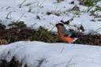 | Trapu, bec épais, béret noir, dessous rouge chez le mâle, brun chez la femelle. |
Petites strophes tristes (00:16).
|
Arbres et buissons. Très farouche. |
| Bruant zizi | 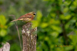 | Masque noir et jaune du mâle typique. |
Chant (0:22) : Son métallique : "tsi-tsi-tsi-tsi-tsi".
|
Arbres et buissons, généralement en hauteur. |
| Buse variable | 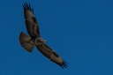 | Brune avec un V blanc sur la poitrine, trapue, ailes rondes. |
Miaulement (0:00).
|
Prés, champs, lisière de forêts. |
| Chardonneret | 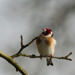 | Petit et très coloré. |
Comme un tintement de clochettes.
|
Buissons, rosiers, arbres isolés. |
| Choucas | 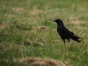 | Assez petit et trapu. |
Cri de contact (0:00) : "tchac" caractéristique.
|
Villages (clochers), souvent en groupe. |
| Chouette chevêche | 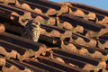 | Petite (une grosse balle de tennis), vol ondulant. |
Chant (0:54) : "tihou ?" interrogatif
|
Autrefois surtout dans les saules têtards, les vieux pommiers. Aujourd'hui de plus en plus dans les grands bâtiments de ferme avec des trous dans les murs, voire en plein village. Facilement audible depuis les terrasses au mois de mars (Ferme Gros, Château des Prés). |
| Chouette effraie | 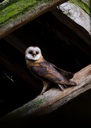 | Blanche avec un visage en forme de cœur. |
Chant (0:00) : long "shhhhh" lugubre faisant penser à la respiration bruyante d'un dormeur, souvent en plein milieu de la nuit.
|
Vieux bâtiments, ruines, clochers. |
| Chouette hulotte | 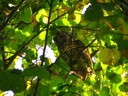 | Teinte générale marron. Vol ample et souple. |
Le chant du mâle et la réponse de la femelle (0:27) sont bien connus.
|
Arbres, vieux bâtiments. |
| Corbeau freux | 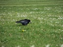 | Bec blanc et pointu. |
|
Champs cultivés. Presque toujours en groupes, parfois très importants. |
| Corneille noire |  |
Plus grosse que le corbeau freux, bec noir et fort. |
|
Partout, seule ou en couple, parfois en petit groupe. |
| Coucou | 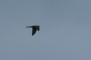 | Taille d'un pigeon, gris. Souvent entendu mais difficile à voir. |
Le chant du mâle au printemps est bien connu.
|
Forêts. |
| Étourneau sansonnet | 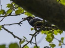 | Petit et noir à peu près comme un merle (mais bec noir, et comportement très différent, tant au sol que perché) |
Incroyable richesse de répertoire.
Imite nombre d'oiseaux (milans, buse, chouettes, pics, faucon crécerelle, hirondelle, merle, grives, caille etc.) voire de mammifères (renard).
Il faut parfois une oreille exercée pour s'apercevoir de la supercherie.
|
Partout. Se rassemble en hiver (jusqu'à plusieurs milliers d'individus) |
| Faucon crécerelle | 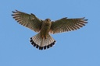 | Ailes fines (ce que ne montre pas la photo), longue queue. |
Cri (0:00) : "kikikikikiki".
|
Champs cultivés, prés, milieux ouverts. |
| Faucon pèlerin | 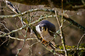 | Plus massif et ailes plus larges que le F. crécerelle. |
|
Falaises uniquement. |
| Fauvette à tête noire | 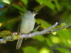 | Plumage gris avec un béret noir (marron clair pour la femelle et les jeunes de l'année). |
Chant (0:35) : d'abord son râpeux puis mélodie flûtée et coulante.
|
Buissons et sous-bois - Très commune mais difficile à voir (cachée dans la frondaison). |
| Geai des chênes | 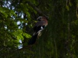 | Beau plumage contrasté. |
Cri bien connu (0:00), l'un des plus désagréables de la création. Parfois imitation (buse 0:10 par exemple).
|
Forêts et sous-bois. |
| Grimpereau des jardins | 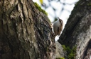 | Un peu comme la sittelle, mais brun moucheté, et bec très fin et arqué. |
|
Partout où il y a des arbres. Également capable de parcourir les murs à la recherche d'insectes. |
| Grive draine | 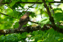 | Un peu plus grande que le merle, brune. |
Cri de contact (0:00) : mitraillette.
|
Bois, parcs. En hiver sur les arbres à gui, ou dans les prés exposés au soleil. |
| Grive musicienne | 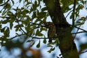 | Plus petite que le merle, brune. |
Chant (0:12) caractérisé par la répétition d'un motif (variable) entre 3 et 5 fois en général.
|
Haies, sous-bois. |
| Héron | 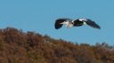 | Grand échassier de couleur grise. Cris audibles dans la vallée de l'Ozerain, même la nuit. |
Cri sonore, aigre et croassant (0:00).
|
Lieux humides, prairies. |
| Hibou grand-duc | 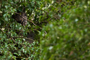 | Très grand (une grosse buse), yeux rouges. |
Chant (0:00) : "ouhou", avec 2e "ou" plus grave, mais pas toujours audible.
Rires "sataniques" (c'est le terme scientifique !) (0:33): "hin-hin-hin".
|
Falaises uniquement. Chante aux alentours (cimetière, clapiers…) pour marquer son territoire. |
| Hirondelle de fenêtres | 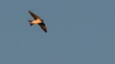 | Ressemble à l'hirondelle rustique, mais plus trapue et vole plus haut. |
|
Près des bâtiments. |
| Hirondelle rustique | 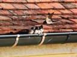 | Gorge rouge, filets à la queue. Vole à faible hauteur. |
|
Près des bâtiments. |
| Huppe | 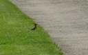 | Taille d'un merle. Très colorée, avec une huppe repliable sur la tête. |
"Oup-oup-oup" (0:00) caractéristique, audible d'assez loin.
|
Vergers, vieux arbres fruitiers. Très farouche. |
| Linotte | 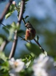 | Mâle à teintes rousses et brunes, femelle brune. |
Chant (0:07) : Sons variés exécutés sans ordre.
|
Buissons bas, peut nicher à quelques centimètres du sol |
| Loriot | Jaune citron pour le mâle, plus verdâtre pour la femelle |
Chant (0:28) : très beaux sifflements coulants.
|
Forêts. Rarement visible, mais plusieurs fois entendu dans le parc | |
| Martinet noir | 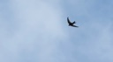 | Tout noir, ailes en faux, extrêmement rapide. Vole très haut. |
Cris suraigus.
|
Toujours en vol à proximité des villages. |
| Merle noir |  |
Bien connu : mâle tout noir avec un bec jaune. |
Chant flûté (0:56) bien connu au printemps.
|
Partout. |
| Mésange à longue queue | 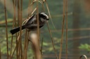 | Longue queue caractéristique. |
Cri de contact (0:08) "tsli, tsli" mouillé.
|
Buissons. Surtout aperçue en hiver, se déplaçant de buisson en buisson par bandes de 6-10 individus. |
| Mésange bleue | 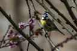 | Petite, très nerveuse. Béret bleu. |
Chant (1:05) : ti… tututututututu.
|
Partout. |
| Mésange charbonnière | 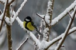 | Assez grande, dessous jaune avec raie noire. Joues blanches très visibles. |
Chant (2:02) : titi-piu, titi-piu. Répertoire très varié.
|
Partout. |
| Mésange huppée | 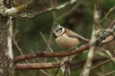 | Brune. La huppe et la tête richement décorée sont caractéristiques. |
|
Assez rare. Surtout dans les conifères, souvent avec d'autres oiseaux (mésanges, roitelets…). |
| Mésange nonnette | 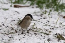 | Brune avec calotte noire. |
Chant (0:31) : "tiu-tiu-tiu-tiu-tiu".
|
Buissons. Souvent aperçue à la mangeoire. |
| Milan noir | 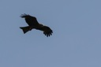 | Grand, très sombre, queue moyennement fourchue. |
Trémolos aigus (0:00).
|
Milieux aquatiques, canal de Bourgogne. |
| Milan royal | 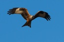 | Grand, queue rouge très fourchue. |
Cris aigus et "secoués".
|
Bocages, prés, vallons ouverts. |
| Moineau | 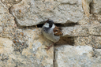 | Petit, marron, gros bec |
|
Près des bâtiments. |
| Pic cendré | 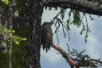 | Vert sombre et gris. |
Chant (0:10) : ressemble au rire du pic vert, mais en plus triste, plus lent, et moins long.
|
Bois et sous-bois. Rare. |
| Pic épeiche | 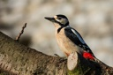 | Noir, blanc et rouge. |
Cri (0:16) : "ki… ki…".
|
Parcs, jardins, forêts. Fréquent à la mangeoire. |
| Pic épeichette | 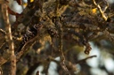 | Tout petit (taille d'un moineau), dos fortement marqueté de blanc. |
Chant (0:16) souvent imité par l'étourneau : "kikikikikikikiki" (cf. Faucon crécerelle et Torcol).
|
Sur les arbres, bouts de branches. |
| Pic mar | 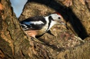 | Comme le pic épeiche mais flancs roses et calotte entièrement rouge. |
Très semblable au pic épeiche.
|
Comme le pic épeiche. Parfois à la mangeoire. |
| Pic noir | 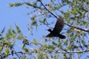 | Grand, tout noir avec une petite calotte rouge. Peut facilement être pris pour un corbeau. |
Plusieurs cris caractéristiques : 0:08 et 0:18.
|
Vastes forêts. |
| Pic vert | 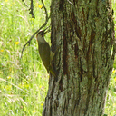 | Assez grand, vert avec calotte rouge. |
Cri caractéristique (0:00) : "klu klu klu klu klu".
|
Parcs, jardins, vergers. |
| Pie bavarde | 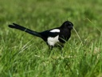 | Blanche et noire, longue queue, bec fort, vol lent et légèrement ondulant. |
Jacassement caractéristique (0:00).
|
Forêts, parcs, jardins. |
| Pigeon ramier | 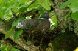 | Gros, barres alaires blanches bien visibles en vol. |
Chant (00:12) : 5 "ou", avec le 2e plus haut et plus fort, les 2 derniers bas et faibles.
|
Bois et champs. Très commun. |
| Pinson des arbres | 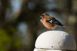 | Barre alaire blanche caractéristique et visible de loin. |
Chant typique et omniprésent au printemps (0:51) : cascade.
|
Partout où il y a des arbres. |
| Pinson du Nord | 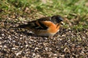 | Couleurs orangées pour le mâle. |
|
Parfois à la mangeoire, seulement en hiver. |
| Pouillot véloce | Teinte générale assez neutre (marron à olive), discret sourcil clair. |
Cri (0:00) : "huît ?" interrogatif, très fréquent en automne.
Chant (0:20) : "chif-chaf", qui lui a valu son nom anglais (chiffchaff), omniprésent au printemps.
|
Buissons et sous-bois - Très commun mais difficile à voir (caché dans la frondaison) | |
| Roitelet à triple bandeau | 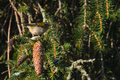 | Semblable au roitelet huppé, mais avec sourcil blanc bien visible. Crête orange chez le mâle. |
Chant (0:21) : répétition rapide d'un même son fin avec léger accroissement de l'intensité, légère montée, et parfois bref trille final.
|
Buissons, lierre, haies de charme des terrasses. |
| Roitelet huppé | 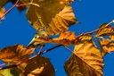 | Teinte vert olivâtre, raie jaune bordée de noir. |
Chant (0:10) : motif aigu répété 4 à 6 fois, avec un trille à la fin.
|
Apprécie surtout les arbres résineux (sapins de la terrasse ND de Lourdes). |
| Rossignol | Marron, sans caractère particulier. |
Très beau chant (0:15), audible tant de jour que de nuit, par les chaudes nuits de fin de printemps.
|
Buissons épais. Difficile à voir. | |
| Rougegorge | 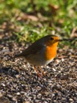 | Rond, marron, gorge rouge. Souvent peu farouche. |
Chant timide (0:23).
|
Buissons, potager, jardins. |
| Rougequeue à front blanc | 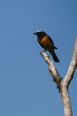 | Ressemble au R. noir, mais tout le dessous est rouge, et un sourcil blanc et large barre le front du mâle. |
|
Arbres. |
| Rougequeue noir | 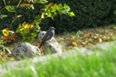 | Noir (mâle) ou brun (femelle, jeune), queue rouge. |
Chant (0:29) : Trille rocailleux.
|
Bâtiments. |
| Serin | Petit, jaune et brun. |
Chant (0:23) : Long trille métallique monocorde.
|
Mâle chanteur souvent posté sur un arbre ou un mur au printemps. | |
| Sittelle torchepot | Comme un petit pic. Évolue le long des troncs d'arbres, parfois la tête en bas. Bleu-gris dessus, rose-orange dessous. |
|
Partout où il y a des arbres. | |
| Torcol | Gris et marron, parfaitement camouflé et immobile sur les branches. |
Le chant du mâle se fait parfois entendre dans le parc au printemps.
|
Vergers. | |
| Tourterelle turque | Taille moyennes, entièrement grise avec des nuances. Collier noir entier chez les adultes, partiel chez les jeunes. |
Le chant (00:00) est un roucoulement bien connu.
|
Toujours proche des humains, généralement dans les villes et villages. | |
| Troglodyte mignon | Tout petit, marron, queue dressée à la perpendiculaire du corps, souvent penché en avant. |
Chant (0:30) : incroyablement fort pour un si petit oiseau.
Série de sons métalliques et de trilles, avec toujours des répétitions de motifs.
|
Forêts et sous-bois (pentes). | |
| Verdier | Massif, vert olive, gros bec, bord de l'aile jaune. |
|
Grands arbres : tilleuls ND de Lourdes. |
{kind=link}
{kind=link}
{kind=link}
{kind=link}
{kind=link}
{kind=link}
{kind=link}
{kind=link}
{kind=link}
{kind=link}
{kind=link}
{kind=link}
{kind=link}
{kind=link}
{kind=link}
{kind=link}
{kind=link}
{kind=link}
{kind=link}
{kind=link}
{kind=link}
{kind=link}
{kind=link}
{kind=link}
{kind=link}
{kind=link}
{kind=link}
{kind=link}
{kind=link}
{kind=link}
{kind=link}
{kind=link}
{kind=link}
{kind=link}
{kind=link}
{kind=link}
{kind=link}
{kind=link}
{kind=link}
{kind=link}
{kind=link}
{kind=link}
{kind=link}
{kind=link}
{kind=link}
{kind=link}
{kind=link}
{kind=link}
{kind=link}
{kind=link}
{kind=link}
{kind=link}
{kind=link}
{kind=link}
{kind=link}
{kind=link}